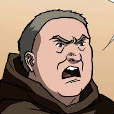
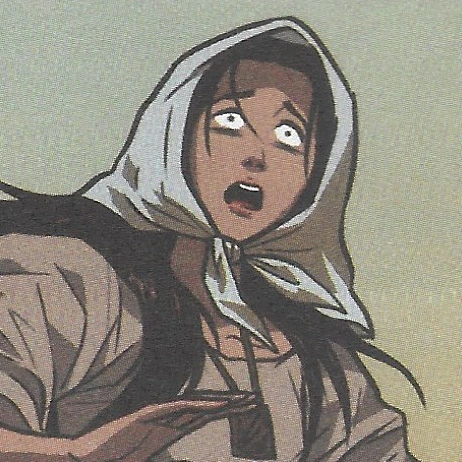
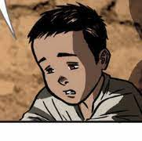
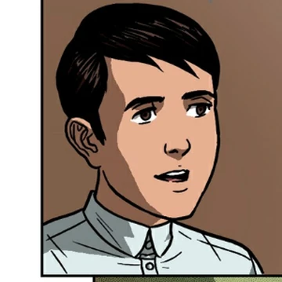

| ✧ |
Characters |
Characters |
| ␥ A wealthy young man of mixed Spanish and Filipino descent who has just returned to the Philippines from Europe after studying abroad for seven years. |
 |
Crisostomo Ibarra |
| ␥ A young woman of high social status and the daughter of Kapitan Tiago. |
 |
Maria Clara |
| ␥ A well-known Filipino social who is a member of the country's wealth. |
 |
Kapitan Tiago |
| ␥ An extrovert who is arrogant, cruel, and judgmental. |
 |
Padre Damaso |
| ␥ A Spanish friar who comes to the Philippines to serve in the Catholic Church. |
 |
Padre Salvi |
| ␥ Sisa is depicted as a middle-aged Filipina mother with physical and emotional scars from her unfortunate past. Her physical appearance reflects the difficulties she has faced. |
 |
Sisa |
| ␥ The youngest son of Sisa who is studying to be a sexton, or a caretaker of the church. |
 |
Crispin |
| ␥ After being taken in by Selo, he became aware of his father's abuse of his mother and recognized the need to find his family. |
 |
Basilio |
| ␥ An intelligent and courteous individual. |
 |
Pilosopo Tasyo |
| ␥ An old Guardia Civil lieutenant and personal friend of Don Rafael Ibarra |
 |
Tinyente Guevarra |